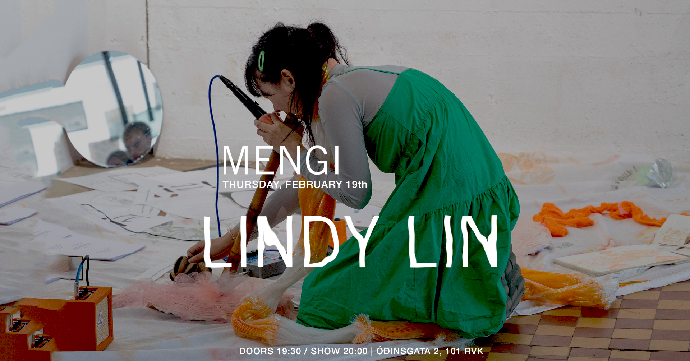
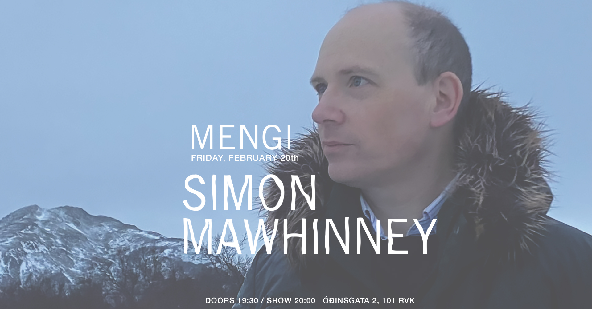
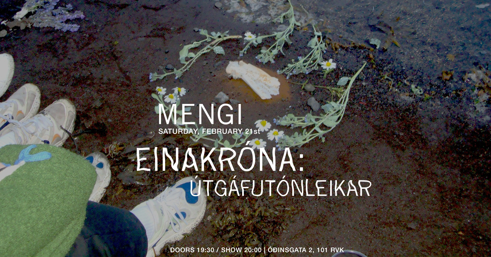
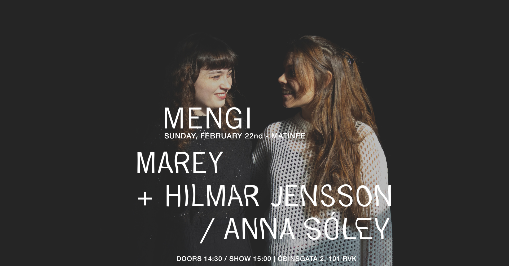

Upcoming Events
THU 19.02 Lindy Lin
Tickets Thursday, February 19th LINDY LIN doors 19:30 / show 20:00 2500kr / 2000kr students / pay what u can Lindy Lin is an electroacoustic composer and audiovisual experimentalist based between Reykjavík and Shanghai. Drawing on cultural heritage and personal mediums, she creates immersive, tactile works using natural soundscapes and everyday objects such as the Xiao flute, guitar, fabric, and mechanical tools. Her surreal and psychedelic compositions critically engage with themes of identity, equality, and societal imbalance. After releasing her debut album “Her Insula” in Shanghai, she relocated to Iceland in 2023 to pursue NAIP music program at the Iceland University of the Arts. She has since become an active presence in Reykjavík’s experimental music and art scene through projects including Yang Soup, Wet Flute Trio, and Sew What. Her ongoing project “Mirror Stage” explores female and gendered identities through composition and improvisation, developed as a collaborative “perfect score” practice with local female-identifying artists. In this concert, she will present new material she has been developing for her ongoing project. Special Guests? https://lindylin.univer.se
FRI 20.02 Simon Mawhinney
Tickets Friday, February 20th SIMON MAWHINNEY doors 19:30 / show 20:00 2500kr / 2000kr students / pay what u can Simon Mawhinney, piano Often described as trance-inducing and ecstatic, Simon Mawhinney’s music extends from his training in Western classical music to engage with aesthetic and performative elements encountered through collaboration, travel and listening. Ranging from strictly organised to freely improvised works, his music often takes musical ideas to their furthest extreme — and then pushes a little further. This concert features solo performances of two recent piano works (both released on Altarus Records): the tender contemplation The Lonely Tree, and the spectacular — at times monolithic — Transitional Objects. Simon Mawhinney’s work as a composer has a notably international focus, with high profile musicians in Germany, France, Iceland, UK and elsewhere regularly collaborating with him on new projects. His music ranges from quietude to frenetic exhilaration and draws on a wide range of contemporary influences: from complexist music to the colouristic harmonies of post-spectralism to the cantillation of numerous cultures. He has a particular interest in the music of Boulez and Messiaen, regarding the former’s Derive 2 as a pinnacle of contemporary music. He has performed Messiaen’s piano work Vingt Regards and will begin teaching a new module about Messiaen’s music in 2013. Indeed, his fondness for including performance in his work both as composer and lecturer was recognized by in 2012 by a Queen’s University Teaching Award. Recent composition projects have included Hunshigo for violin and piano (recorded for Altarus Records by Darragh Morgan and Mary Dullea), Perseid (commissioned by Ensemble Recherche, Germany), Starbog for chamber orchestra (commissioned by Ensemble Caput, Iceland). Mary Dullea has recently recorded his 55-minute piano work, Marlacoo, scheduled for CD release in late 2013 and Kolbeinn Bjarnason will record his sequence of piecesfor bass flute and computer in 2014. In early 2013, Simon Mawhinney was awarded a period of study leave to focus on the completion of a nine-movement work for viola d’amore and string quartet – believed to be the first work written for this particular grouping of instruments. This work was commissioned by Garth Knox and Quatuor Béla, and will be premiered in Paris in November 2013.
SAT 21.02 Einakróna: Útgáfutónleikar
Tickets Saturday, February 21st EINAKRÓNA: ÚTGÁFUTÓNLEIKAR doors 19:30 / show 20:00 2500kr / 2000kr students / pay what u can Einakróna fagnar útgáfu fyrstu plötu þeirra Rembihnútar í Mengi 21. febrúar !!! Einakróna byrjaði sem sóló garageband-soundcloud verkefni Bjarkar en er núna að spila sem alvöru hljómsveit í alvöru heiminum með kontrabassa, hljómborði og trommum svo eitthvað sé nefnt. Hljómsveitin sækir innblástur í indie folk tónlist og textarnir eru ljóðrænir og persónulegir. ----- Einakróna celebrates the release of their debut album Rembihnútar in Mengi February 21st !!! Einakróna started as Björk's solo garageband-soundcloud project but is now a real band in the real world that plays with double bass, keyboard and drums, to name a few things. The band takes inspiration from indie folk music and the lyrics are poetic and personal.
SUN 22.02 Marey feat. Hilmar Jensson / Anna Sóley
Tickets Sunday, February 22nd - MATINEE Marey feat. Hilmar Jensson / Anna Sóley Doors 14:30 / Show 15:00 2500kr / 2000kr students / pay what u can Dúóið Marey mun hefja tónleikana á frumsömdu efni þar sem gerðar verða alls konar tilraunir með tóna og hljóð. Marey fær til liðs við sig gítarleikarann Hilmar Jensson. Þar á eftir flytja þau blöndu af nýjum og gömlum lögum í söngvaskáldastíl. Anna Sóley er höfundur laganna og mun tríóið mála upp hugljúfa stund með áheyrendum. Systurnar Lilja María og Anna Sóley Ásmundsdætur skipa dúóið Marey sem blandar tilraunakenndri spunatónlist við rafhljóð og ljóðalestur. Áhrifa gætir frá samtímaklassík, hljóðlist, skandinavískum jazzi og söngvaskáldatónlist. Lilja María spilar á hljóðskúlptúrinn Huldu, hljóðfæri sem hún hannaði sjálf, og býr til hljóðmyndir. Anna Sóley spilar á fiðlu, syngur og hannar hljóðmyndir. Dúóið hefur haldið tónleika á Íslandi, í Hollandi, Þýskalandi og Bretlandi. Þar má nefna tónlistarhátíðina Lost in the Hills og tónleikaseríur eins og Classic Jamming og Bruitkasten. Marey tók nýlega upp efni fyrir fyrstu plötu sína en hún mun bera heitið Skuggar. Þar fengu þær systur til liðs við sig Skúla Sverrisson, Hilmar Jensson og Magnús Trygvason Eliassen. Söngvaskáldið Anna Sóley mun flytja nýtt efni af væntanlegri breiðskífu, Painting Reality, Photographing Fiction í bland við eldri lög með það að markmiði að mála upp hugljúfa stund með áheyrendum. Lögin sækja flest til söngvaskáldatónlistar og heyra má áhrif frá Emilíönu Torrini og Nick Drake. Textarnir eru myndrænir og ákveðin mótíf endurtaka sig í gegnum plötuna, mótíf sem kanna hegðunarmynstur og hvernig frásögn á það til að hafa áhrif á sýn okkar á tilveruna. Lilja María spilar með á Huldu, hljóðfæri sem hún hannaði sjálf og Hilmar Jensson leikur á rafgítar. https://www.instagram.com/mareyduo/ https://www.instagram.com/annasoleyasmundsdottir/ /// The concert starts with works by Marey, where the duo improvises, plays, sings, and experiments with sounds. Hilmar Jensson will join them on electric guitar. Following that, they perform a set of original songs by singer-songwriter Anna Sóley, where they strive to create a cozy atmosphere and memorable moments with the audience. Marey is a duo founded by sisters Lilja Marı́a and Anna Sóley. They play improvised experimental music mixed with electronics and poetry, where sound art, Scandinavian jazz, spoken word, contemporary classical music, and folk music meet. Lilja Marı́a plays Hulda, a string instrument of her own design. Anna Sóley writes the poetry, plays the violin, and sings, exploring soundscapes, spoken word, and extended techniques. Both design electronics; Anna mainly uses samples from Hulda, while Lilja works on a conceptual basis, taking inspiration from the poems. The duo has performed in Iceland, the Netherlands, Germany, and the UK, at festivals such as Lost in the Hills and various concert series, including Classic Jamming and Bruitkasten. Last November, Marey recorded their debut album, Skuggar (Shadows), featuring Skúli Sverrisson, Hilmar Jensson, and Magnús Trygvason Eliassen. Singer-songwriter Anna Sóley will perform new songs from her upcoming album, Painting Reality, Photographing Fiction, along with older original songs. The songs draw from folk music and singer-songwriters such as Emilíana Torrini and Nick Drake. The lyrics incorporate vivid imagery, and motifs recur throughout the album, exploring behavioral patterns and how storytelling influences our perception of reality. Lilja María and Hilmar Jensson will accompany Anna Sóley on Hulda and electric guitar, respectively. Hulda is an instrument that Lilja designed. https://www.instagram.com/mareyduo/ https://www.instagram.com/annasoleyasmundsdottir/

THU 26.02 Sölvi Kolbeins Trio
Tickets Thursday, February 26th SÖLVI KOLBEINS TRIO doors 19:30 / show 20:00 2500kr / 2000kr students / pay what u can Tríó saxófónleikarans Sölva Kolbeinssonar leikur efni af plötunni Collage sem kom út hjá Reykjavík Record Shop í nóvember 2025. Collage er fyrsta hljómplata Sölva eingöngu með eigin tónsmíðum. Þetta er tilraunakenndur djass, innblásinn af dvöl hans í Berlín og Kaupmannahöfn ásamt því að flytja aftur heim til Íslands. Lögin eru ólík og tákna mismunandi augnablik, myndir, hver og ein með eigin stemningu og sterk karaktereinkenni. Saman skapa myndirnar heild og þaðan kemur titill plötunnar. Ásamt Sölva koma fram gítarleikarinn Hilmar Jensson og slagverksleikarinn Magnús Trygvason Eliassen. Tríóið varð til út frá dúói Sölva og Magnúsar en þeir voru paraðir saman við Hilmar á Djasshátíð 2020 og spiluðu þar stórskemmtilega tónleika. Til að byrja með spiluðu þeir sín uppáhalds lög eftir aðra en fókusinn færðist fljótlega yfir á tónsmíðar Sölva. Eftir að spila fleiri tónleika og prófa allskonar héldu þeir íí hljóðver desember 2024. Nú er komin plata og meira á leiðinni! Sölvi Kolbeinsson (f. 1996) er saxófónleikari og tónskáld. Hann stundaði klassískt saxófónnám í Tónmenntaskóla Reykjavíkur og Tónlistarskólanum í Reykjavík en rytmískt nám í Tónlistarskóla FÍH og Jazz-Institut Berlin þaðan sem hann lauk BA námi sumarið 2019. Hann er meðlimur í mörgum ólíkum hópum á Íslandi og víðar. Þar má nefna dúó með trommaranum Magnúsi Trygvasyni Eliassen, Mánudjass, Camus quartet, Ari Árelíus, La bomba, Guiding star orchestra, Hamamelidae, Volcano bjorn og Windisch quartet. Sölvi hefur spilað á djasshátíðum í Kanada, Þýskalandi, Finnlandi, Noregi, Danmörku og á Íslandi auk þess að hafa komið fram í fjölda annarra landa. Sölvi hefur gefið út þrjár plötur eingöngu með eigin tónsmíðum: Collage (2025), Live in Berlin (2022) og August (2021). Hann hlaut Íslensku tónlistarverðlaunin árið 2016 sem bjartasta vonin í flokknum Djass- og blústónlist. Sölvi kennir á saxófón og klarinett í Skólahljómsveit Grafarvogs og Tónskóla Sigursveins síðan haustið 2023. ------- Icelandic saxophonist Sölvi Kolbeinsson plays material from his album Collage, released by Reykjavík Record Shop in November 2025. Collage is Sölvi's first album solely with his own compositions. It is experimental jazz, inspired by his stay in Berlin and Copenhagen as well as moving back home to Iceland. The songs are variable and represent different moments, images, each with its own atmosphere and strong character traits. Together, the images create a whole and that leads us to the album title. Along with Sölvi are guitarist Hilmar Jensson and percussionist Magnús Trygvason Eliassen. The trio is an extension of Sölvi ́s and Magnús ́s duo. They were paired with Hilmar at the 2020 Reykjavík Jazz Festival and played a great concert there. At first, they played their favourite songs by others, but the focus soon shifted to Sölvi's compositions. After playing more concerts and rehearsing, they went into the studio in December 2024. Now there is an album out and more on the way! Sölvi Kolbeinsson (b. 1996) is a Icelandic saxophonist and composer. He studied classical saxophone at the Reykjavík School of Music and rhythmic studies at the FÍH School of Music and the Jazz-Institut Berlin, from where he graduated with a BA in the summer of 2019. He is a member of many different groups in Iceland and beyond. These include a duo with drummer Magnús Trygvason Eliassen, Mánudjass, Camus quartet, Ari Árelíus, La bomba, Guiding star orchestra, Hamamelidae, Volcano bjorn and Windisch quartet. Sölvi has played at jazz festivals in Canada, Germany, Finland, Norway, Denmark and Iceland, as well as having performed in many other countries. Sölvi has released three albums of his own compositions: Collage (2025), Live in Berlin (2022) and August (2021). He received the Icelandic Music Award in 2016 as the brightest hope in the Jazz and Blues category. Sölvi has been teaching saxophone and clarinet at the Grafarvogur School Orchestra and Sigursveinn Music School since 2023.

FRI 27.02 Ásta Fanney
Tickets Friday, February 27th ÁSTA FANNEY doors 19:30 / show 20:00 2500kr / 2000kr students / pay what u can MORE INFO TBA Ásta Fanney Sigurðardóttir (1987), deals with art, poetry, filmmaking and music. She has exhibited and performed her work in museums and festivals around the world, including Reykjavík Art Gallery, Ars Longa, Onassis and MOT and was nominated for the Bernard-Heidsieck-Centre Pompidou prize in France in 2021. Ásta Fanney will represent Iceland at the Venice Art Biennale in 2026.

SAT 28.02 Amor Vincit Omnia: Extended Babe Album Release
Tickets Saturday, February 28th AMOR VINCIT OMNIA: EXTENDED BABE ALBUM RELEASE doors 19:30 / show 20:00 2500kr / 2000kr students / pay what u can Amor Vincit Omnia invites all to their release concerts where the new EP extended babe will be premiered along with various instrumentalists. The EP has been in the making for a long time and we are super excited to share it with you in all its glory. Amor Vincit Omnia býður til útgáfutónleika þar sem nýja stuttskífa þeirra extended babe verður frumflutt ásamt hinum og þessum hljóðfæraleikurum. Platan hefur verið í vinnslu í þó nokkurn tíma og erum við spennt að deila henni með ykkur í heild sinni. ------ Amor Vincit Omnia is a pop-project born in 2023. Amor’s music is best described as playful and eccentric. They are inspired by people who push the boundaries of pop music, and their sounds are inspired by everything between Skrillex and Steve Reich. In 2024, Amor released their debut EP, brb babe, earning them Reykjavik Grapevine’s ‘One to Watch’ and the Kraumur Awards. In February they are releasing their second EP, extended babe, a heartfelt collection of songs made for the sole purpose of making people feel worse about their love life. Amor Vincit Omnia er popp hljómsveit skipuð af þeim Erlu Hlín og Baldri. Tónlistinni þeirra má lýsa sem leikandi og spennandi og dregur innblástur frá framsæknu tónlistarfólki, allt á milli Skrillex og Steve Reich. Fyrsta stuttskífa Amor kom út 2024 og fyrir hana fengu þau kraumsverðlaun og unnu í þokkabót titilinn ‘One to Watch’ hjá Reykjavik Grapevine. Í febrúar ætla þau að gefa út splunkunýja stuttskífu, extended babe, en það er samansafn af lögum sem gerð eru til að láta fólki líða verr og drukkna í harmi ástarinnar.